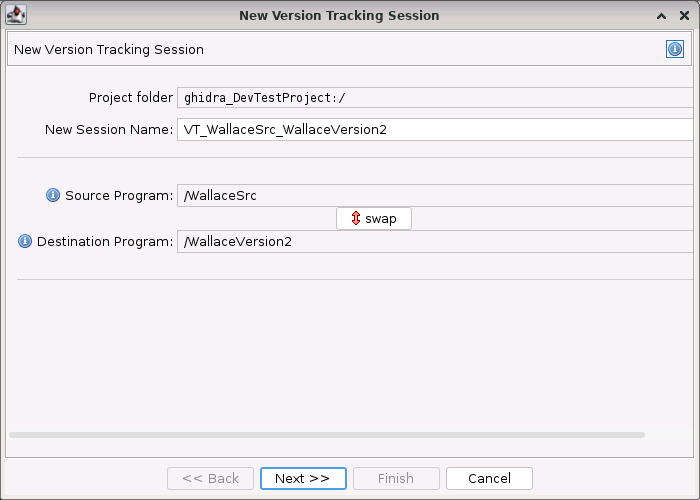
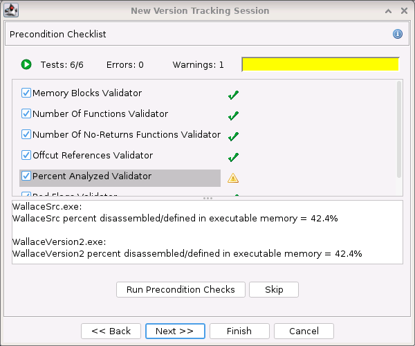
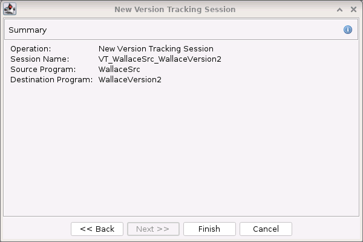
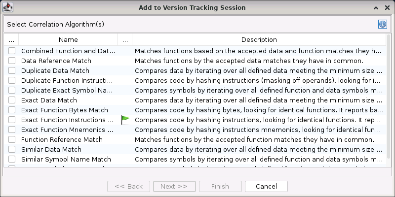
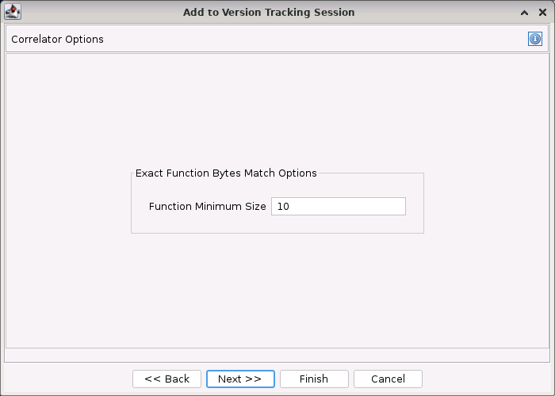
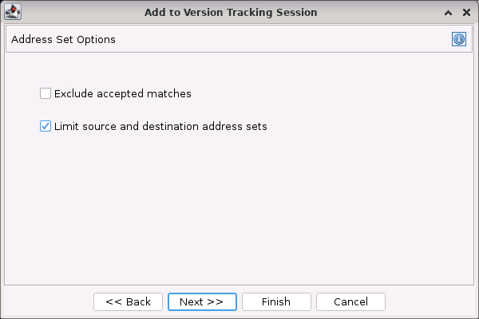
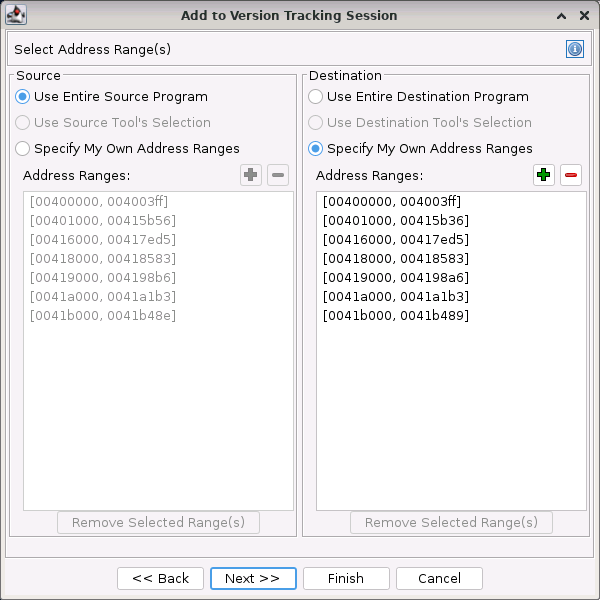
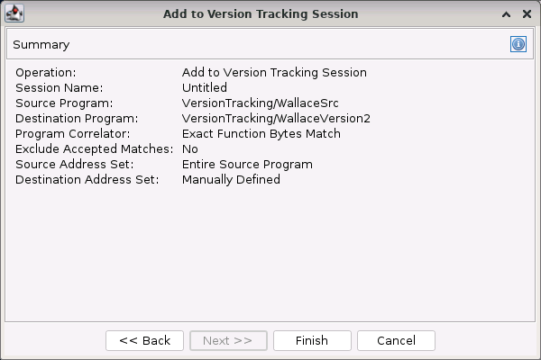

The version tracking wizard guides you through the process of creating a new version tracking session or adding results to an existing session.
Creating a New Session
To create a new version tracking session you can:
- Drag the two programs to be tracked onto a running tool or the Version Tracking tool button (more info)
- Press the Create Session
action from within the Version Tracking Tool
New Version Tracking Session Panel
 The new version tracking session panel appears when creating a new session only. On this page you specify the domain folder in your project in which to store the session information, the name of the session domain object, and the source and destination programs. The source program is the existing program that's been analyzed and contains markup to transfer. The destination program is the new program that will receive the markup items.
When dragging two programs from the front-end onto the version tracking tool, the source and destination might not be properly identified. If they are backwards (source is destination, destination is source) simply press the "swap" button (
) to correct the ordering.
Preconditions Panel
 The preconditions panel has a list of mini-analysis routines called "validators". These validators analyze parts of your source and destination programs, looking for potential problems which will adversely affect version tracking success. For instance, a large difference in the number of defined functions between the source and the destination programs could be an indication that they are not ready to be correlated.
Press the button "Run Precondition checks", and then review the results in the panel by clicking on the individual tests in the list.
Click here for a list of known preconditions.
Summary Panel
 The summary panel shows a summary of the selections provided to the Version Tracking wizard before it creates the new version tracking session. Selecting the "Finish" button creates the new version tracking session.
Add to an Existing Session
To add to an existing session you can:
- Press the Add to Session
action from within the Version Tracking Tool
The wizard panels that appear can vary depending on which options are selected on prior panels. For example, the correlator options will depend upon which correlation algorithm was chosen. Also the Select Address Ranges panel is only displayed if you choose to Limit Addresses on the Address Set Options panel. The following wizard panels are for adding correlation results to an existing session.
Correlation Algorithm Panel
 The correlation algorithm panel lets you choose which program correlator to use. The list is dynamically populated based upon which features you have installed, so the actual list may look different than that above. See the Correlators help page for more information about individual correlators or the Workflow help page for information about which correlators to run first.
Options Panel
 The options panel displays correlation algorithm specific options to select. Please see notes on the individual correlator algorithms for more information about their options.
Address Set Options Panel
 The address set options panel lets the user add or remove specific address ranges from consideration by the chosen program correlator.
This Exclude accepted matches option will cause the correlator algorithm to not consider any functions or data that have already been accepted. Using this option can greatly speed up the processing time of the correlator algorithm; however, this options should only be used when you trust that your accepted matches are correct. As an example, if you accepted matches from the Exact Function Bytes correlator algorithm, you can be very confident that your matches are correct because they are unique matches with all bytes in each function are identical to each other. These matches would be ok to exclude in the next correlator run.
NOTE: This option will be disabled when the correlator does not support limiting search scope.
The Limit source and destination address sets option allows the users to choose ranges of their program to limit the current correlator algorithm to when matching functions and data. If you need to restrict the address ranges of your programs, you should select the checkbox here. For instance, this might be useful if you have two copies of your functions in memory and only want to consider one copy.
If you select this option you will be presented with another panel for limiting the source program's address ranges and the destination program's address ranges.
Select Address Range(s) Panel
 The select address ranges panel lets the user limit the source and destination address sets that will be used by the chosen program correlator when determining version tracking matches. The left side lets you specify what addresses to use from the Source program and the right side allows you to specify the address ranges to use from the Destination program.
Source
The left side of this panel allows you to specify the address ranges to use from the Source program when adding version tracking matches to a session. Select the appropriate radio button to indicate the addresses that you want the correlator to use.
The Use Entire Source Program option will use all memory addresses currently defined in the source program when determining match results.
The Use Source Tool Selection option will use all memory addresses that were selected in the Source Tool's listing when you invoked the Add To Session version tracking wizard. If necessary, you can Cancel the current wizard, select addresses in the version tracking Source Tool, and restart the wizard if you want to limit the addresses using a selection.
The Specify My Own Address Ranges option allows you to manually specify address ranges of the Source program to include when determining matches with the current correlator algorithm. All other addresses will be ignored.
If you choose this option, you can specify the ranges of addresses, which then appear in the Address Ranges list. The list and its associated buttons are disabled whenever the option is not the currently selected radio button. When you have a Source Tool selection, the list will initially contain the same address ranges as the selection. Otherwise, it will contain the address ranges for the current memory in the source program.
Press the Add Range
Press the Remove Range
button to remove all addresses from the list that fall within a specific range.
Pressing the Remove Selected Range(s) button will remove any address ranges from the Address Ranges list that are currently selected.
Destination
The right side of this panel allows you to specify the address ranges to use from the Destination program when adding version tracking matches to a session. Select the appropriate radio button to indicate the addresses that you want the correlator to use from the destination program.
The options within the Destination function in the same manner as they did for the Source, but instead apply to addresses within the destination program.
The Use Entire Destination Program option will use all memory addresses currently defined in the destination program when determining match results.
The Use Destination Tool Selection option will use all memory addresses that were selected in the Destination Tool's listing when you invoked the Add To Session version tracking wizard. If necessary, you can Cancel the current wizard, select addresses in the version tracking Destination Tool, and restart the wizard if you want to limit the addresses using a selection.
The Specify My Own Address Ranges option allows you to manually specify address ranges of the Destination program to include when determining matches with the current correlator algorithm. All other addresses will be ignored.
If you choose this option, you can specify the ranges of addresses, which then appear in the Address Ranges list. The list and its associated buttons are disabled whenever the option is not the currently selected radio button. When you have a Destination Tool selection, the list will initially contain the same address ranges as the selection. Otherwise, it will contain the address ranges for the current memory in the destination program.
Press the Add Range
Press the Remove Range
Pressing the Remove Selected Range(s) button will remove any address ranges from the Address Ranges list that are currently selected.
Summary Panel
 The summary panel shows a summary of the selections provided to the Version Tracking wizard before it runs the correlation. Selecting the Finish button will run the correlation and add its results to the current version tracking session.